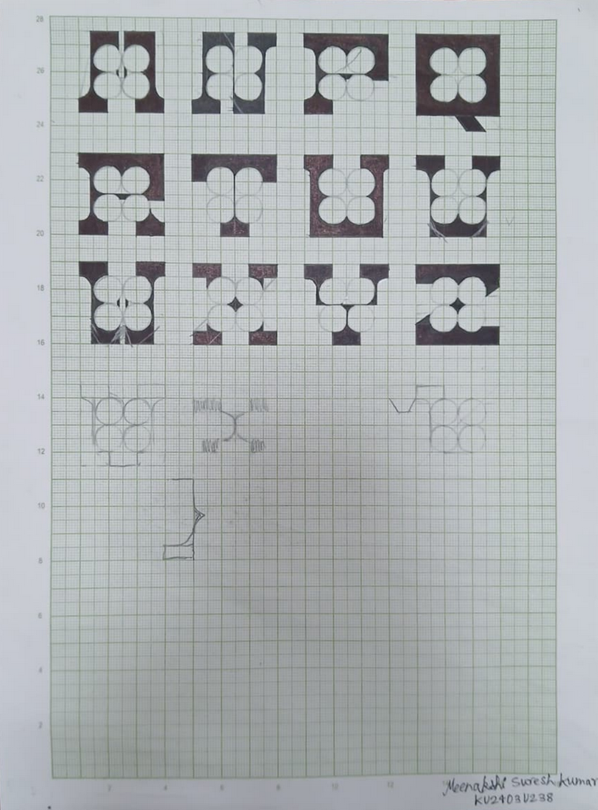
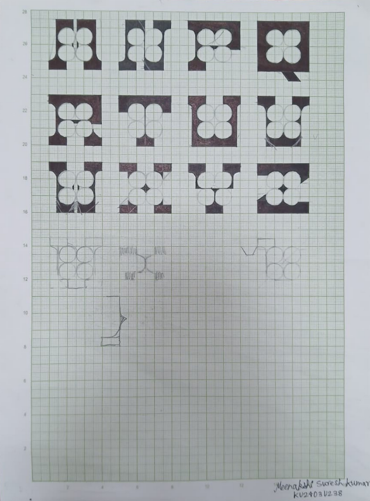
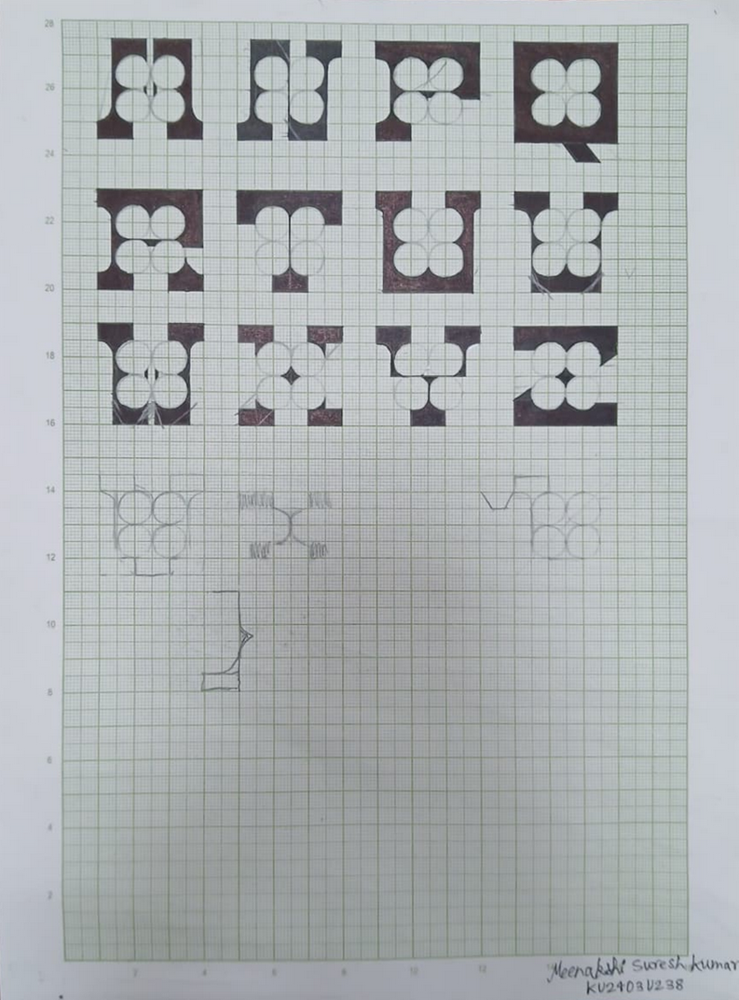

Ideation Phase
Using different shapes for exploration

 

This project was based on developing my own typographic by exploring letterforms using shapes , using a basic shape as a foundational grid.


Through this exploration, I realised how working within a geometric system sharpened my typographic thinking. Using one basic shape as a grid helped me understand balance, spacing, and form, while pushing me to make intentional design choices.